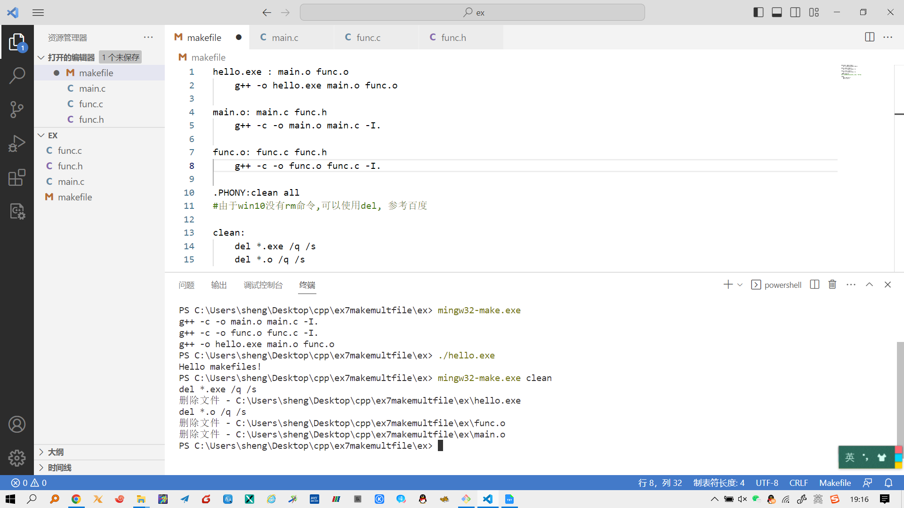

make入门教程 (采用 mingw32-make.exe)
上一节，我们已经学习了如何用g++编译单个.cpp文件。如果有多个 .cpp 文件我们如何来编译我们的程序呢？
Makefile是一种方便的组织代码编译方式。下面我们来创建自己的makefile，编译并链接多个.cpp ，生成可执行程序。
一个简单的例子
首先举一个简单的例子，在项目文件夹中有三个文件: main.c ，func.c ，func.h ，分别代表着主程序，函数实现和对应的头文件。
main.c
// main.c
#include <stdio.h>
#include "func.h"
int main() {
sayHello();
return 0;
}
func.h
// func.h
void sayHello();
func.c
// func.c
#include <stdio.h>
#include "func.h"
void sayHello() {
printf("Hello makefiles!\n");
}
一般情况下，我们将使用以下命令来编译这个项目：
g++ -o hello.exe main.c func.c -I. # 注意最后的点代表当前目录
这条命令编译了两个.c文件 main.c func.c , 并将可执行文件命名为 hello.exe
-o定义生成的可执行文件的名字。-I.代表gcc将在当前目录（.）寻找包含的头文件.
当只有轻微的改动时适当修改一下这条命令就已经足够了，但当添加更多文件时，这就很麻烦了。
另外，如果你只改动了其中某一个.c文件，这条命令每次都将重新编译所有文件，对于大项目来说效率很低，所以这才需要makefile.
1 Makefile
hello.exe : main.c func.c
g++ -o hello.exe main.c func.c -I.
将这条规则写进一个名为makefile的文件，然后在 vscode 终端中键入 mingw32-make.exe 就可以执行文件中的第一条规则了。其中冒号:后面放置的是规则 hello.exe 所依赖的文件，当这些文件改动时，规则 hello.exe 会被重新执行。这里没有放置头文件，所以即使头文件改变，命令行中键入 mingw32-make.exe ，这条规则也不会被执行。当然，就目前来说，这条规则效率很低。
需要注意的是，在g++命令前有一个tab制表符，在任何命令前都必须有个tab制表符。
- make 这个软件有很多不同的版本，用来支持各种系统。
mingw32-make.exe是 make 在 win10 下的一个版本。mingw32-make.exe和你之前配置的 g++ 在同一位置，之前配置了 g++ 的环境变量，就不用配置 mingw32-make.exe 的环境变量了
2 Makefile
hello.exe : main.o func.o
g++ -o hello.exe main.o func.o
这里我们通过把目标文件 main.o 和 func.o 放置在规则依赖列表中，make将链接目标文件 main.o func.o 生成可执行文件 hello.exe 。
这样的makefile足够应对小型项目，但是像之前提到的：依赖文件中没有包含头文件，所以头文件改变后make将不会重新编译.c文件。为了修补这个问题，我们需要将头文件加入到依赖列表中。如下所示：
hello.exe : main.o func.o
g++ -o hello.exe main.o func.o
main.o: main.c func.h
g++ -c -o main.o main.c -I.
func.o: func.c func.h
g++ -c -o func.o func.c -I.
-c指出仅生成目标文件.o-o指出生成的目标文件的名字。
make将先编译并生成目标文件 func.o 和 main.o ,之后， 链接这两个文件生成可执行文件 hello.exe
3 makefile 完整的例子
工作目录中的文件
-|
|---func.h
|---func.c
|---main.c
|---makefile
makefile
hello.exe : main.o func.o
g++ -o hello.exe main.o func.o
main.o: main.c func.h
g++ -c -o main.o main.c -I.
func.o: func.c func.h
g++ -c -o func.o func.c -I.
.PHONY:clean all
#由于win10没有rm命令,可以使用del, 参考百度
clean:
del *.exe /q /s
del *.o /q /s
main.c
// main.c
#include <stdio.h>
#include "func.h"
int main() {
sayHello();
return 0;
}
func.h
// func.h
void sayHello();
func.c
// func.c
#include <stdio.h>
#include "func.h"
void sayHello() {
printf("Hello makefiles!\n");
}
在 vscode 终端中，执行如下命令编译、运行、清理程序
mingw32-make.exe编译生成exe./hello.exe运行程序mingw32-make.exe clean删除可执行程序exe和目标文件.o。注意到以上的makefile中我们定义了clean规则，所以这里可以执行clean规则。
执行过程如下图：

参考：https://blog.csdn.net/qq_35754154/article/details/127432564
如果学习完本实例，仍然没有懂make使用方法，建议自己百度make教程学习。